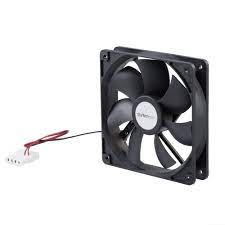

Un ventilador (usualmente llamado también cooler o fan) es un dispositivo de ventilación que usualmente
extrae el aire caliente del interior de un gabinete o contenedor de uno o varios dispositivos electrónicos.
También puede cumplir una función de limpieza, dado que puede retirar aire sucio (con pelusas) del interior del dispositivo.
El objetivo fundamental del ventilador es mantener la temperatura baja en el interior del dispositivo electrónico.
La falta, obstrucción o rotura de un ventilador, puede terminar con un dispositivo inutilizado por el exceso de temperatura.